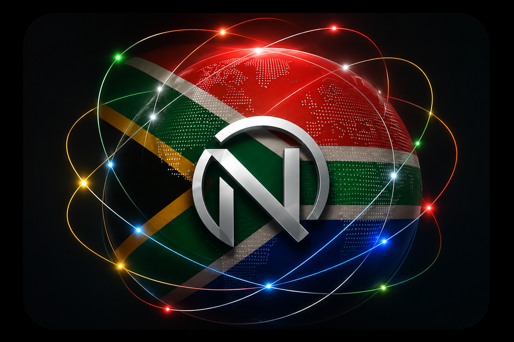

Connecting to today’s leading intelligence signal…
Nous is retrieving the latest public intelligence.
NOUS INTELLIGENCE
What would you like to understand today?
Connecting to the Neurorder intelligence feed…

TODAY'S INTELLIGENCE
Public intelligence from News24 and the United Nations Development Programme, organised inside Nous for clearer understanding.
Nous is retrieving the latest public intelligence.
LATEST SIGNALS
News24 and UNDP
Connecting to News24 and UNDP.
Select another category or search for a different topic.
External headlines are displayed for informational purposes. Articles remain the property of their respective publishers.
NOUS INSIGHT
Future versions of Nous will help explain patterns across public intelligence, research and financial systems.